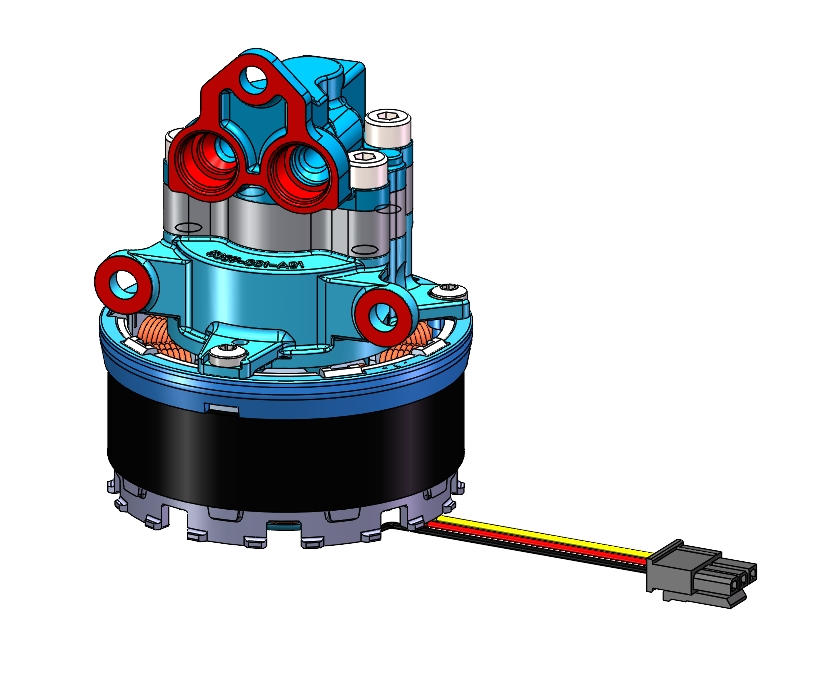
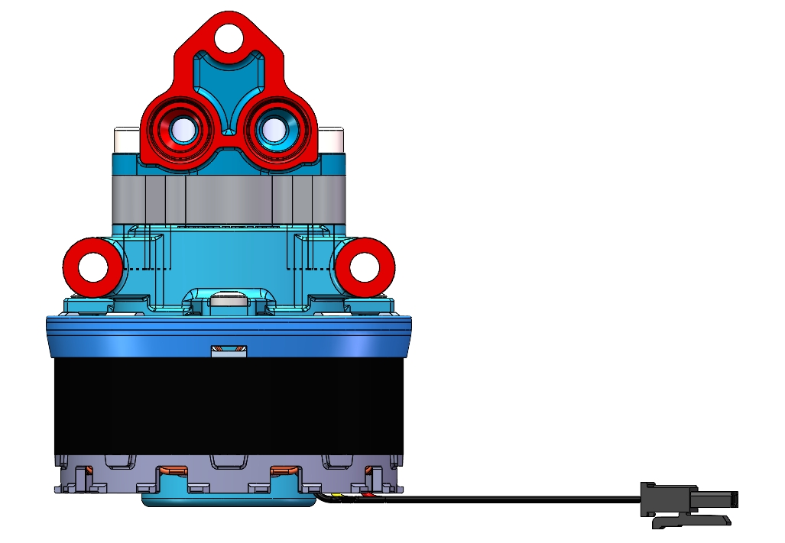
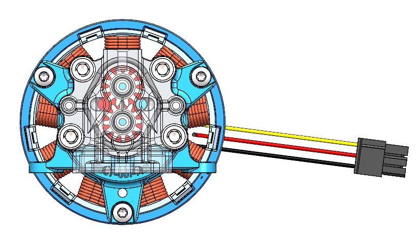
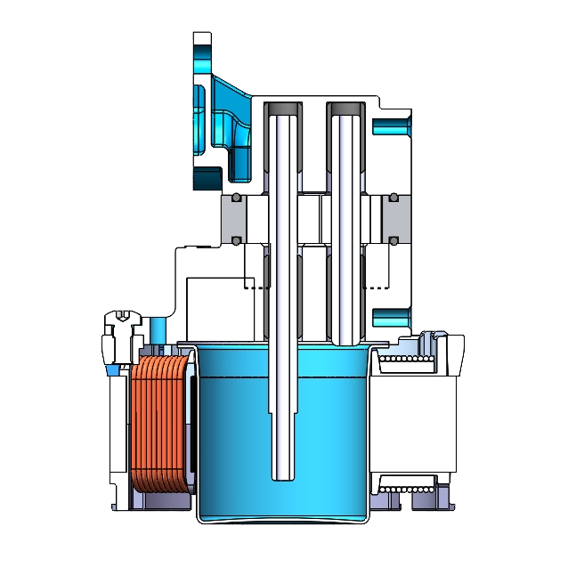
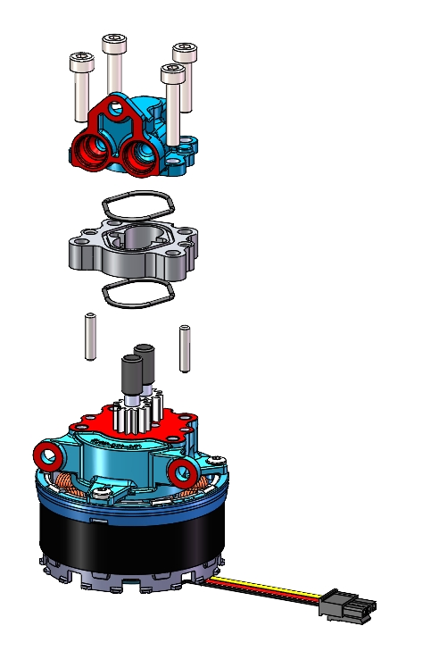

上盖与接口
包含进出口连接结构、定位孔与紧固件安装位，负责密封上部流道并连接外部管路。

SolidWorks Mesh Assembly
Working Principle
SolidWorks Views




Assembly
包含进出口连接结构、定位孔与紧固件安装位，负责密封上部流道并连接外部管路。
泵体形成齿轮工作腔，密封圈用于减少端面泄漏，保证小型泵体的输出稳定性。
主动齿轮带动从动齿轮反向旋转，啮合区完成吸入、输送和排出的连续循环。
底部结构承担固定、支撑和电机连接功能，外部线束为动力输入提供接口。